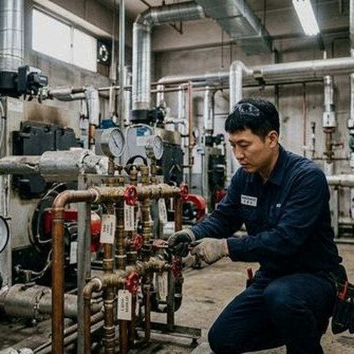
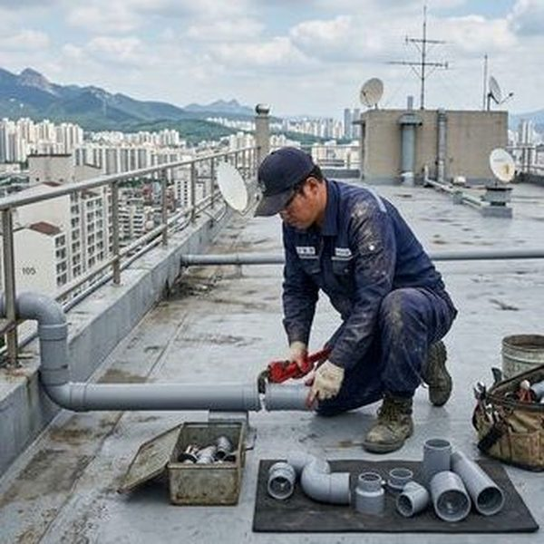

화장실 환기가 배관에 미치는 영향
화장실은 습기가 가장 많이 발생하는 공간입니다. 환기가 제대로 되지 않으면 배관 표면에 결로가 지속적으로 발생하며, 이는 금속 배관의 부식을 촉진합니다. 특히 겨울철 실내외 온도차가 클 때 결로 현상이 심해지는데, 이때 환풍기를 가동하지 않으면 배관 연결부에 물방울이 맺혀 녹이 발생합니다. 제우스시설관리에서 출동하는 현장 중 약 30%는 환기 불량이 원인인 배관 부식 사례입니다. 환풍기는 샤워 후 최소 20분 이상 가동하는 것이 좋으며, 자연환기가 어려운 구조라면 타이머형 환풍기 설치를 권장합니다.

전문가가 권하는 화장실 배관 관리법
첫째, 배수구 트랩의 물이 마르지 않도록 주기적으로 물을 흘려보냅니다. 트랩의 봉수가 마르면 하수관의 악취와 해충이 올라옵니다. 둘째, 배수구 주변에 곰팡이가 보이면 즉시 제거하고, 배관 연결부 실리콘의 상태를 점검합니다. 셋째, 6개월에 한 번은 전문 업체의 내시경 점검을 받아 배관 내부 상태를 확인하는 것이 좋습니다. 제우스시설관리는 최신 CCTV 내시경 장비로 배관 내부를 실시간으로 확인하여 문제를 사전에 발견합니다. 28분 내 출동 서비스로 긴급 상황에도 신속하게 대응합니다.

자주 묻는 질문
Q. 화장실 환풍기는 하루에 얼마나 가동해야 하나요?
A. 샤워 후 최소 20분, 하루 총 1~2시간 가동을 권장합니다. 24시간 저속 운전 모드가 있는 제품이면 더욱 좋습니다.
Q. 배관 부식은 어떤 증상으로 알 수 있나요?
A. 배수 속도가 느려지거나, 배관 연결부에서 녹물이 나오거나, 벽면에 물 얼룩이 생기면 부식을 의심해야 합니다.